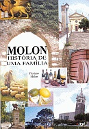

Livro da família
|  |
A Família Molon tem o seu livro de pesquisa e apresenta ainda a grande árvore genealógica dos mais de 8 mil nomes já catalogados. O livro poderá ser adquirido enviando e-mail para fmolon@cpovo.net ou pelo telefone (51) 3341.25.03. Abaixo mais informações sobre o livro. |
FAMÍLIA MOLON
Da Grécia para a Itália, da Itália para o Brasil.
Italianos, Gregos, meu rosto, minha raça.
Autor: Floriano Molon - Editora EST
"Os que não conhecem suas raízes formam uma multidão anônima e sem rosto. Correm pelo mundo sem saber donde vieram e para onde vão."
SUMÁRIO
- Apresentação
-
CAPÍTULO I - AS ORIGENS DA FAMÍLIA MOLON
- O passado
- Origens dos Sobrenomes e Pesquisa Histórico-Linguística
- Brasões
- Símbolo da Família Molon no Brasil
- A Mesopotânia e a Grécia
- A Itália
- O Vêneto
- Província de Vicenza
- Arzignano, Chiampo e Recoaro Terme
-
CAPÍTULO II - A IMIGRAÇÃO - RUMO AO BRASIL
- Porque emigrar
- A grande aventura
- Imigrantes Molon no Brasil
- Novo Território da Colônia Caxias
- Histórico de Flores da Cunha
- Histórico de Otávio Rocha
-
CAPÍTULO III - ENCONTROS DA FAMÍLIA MOLON
- 1º Encontro
- 2º Encontro
- 3º Encontro
- 4º Encontro
-
CAPÍTULO IV - ÁRVORES GENEALÓGICAS
- IMIGRANTES E SUAS DESCENDÊNCIAS
- I: PIETRO MOLON E FRANCISCA ZIGGIOTTI. Trav. Pinhal - Otávio Rocha/F.da Cunha.
- II: ALESSANDRO MOLON E TEREZA GENARO . Trav. Pinhal - Otávio Rocha/F. da Cunha
- III: GIOVANNI BATISTA MOLON E MARIA MAGNABOSCO - Farroupilha
- IV: ÂNGELO MOLON E CECÍLIA ZILIOTTO - Trav. Pinhal/ Otávio Rocha/F. da Cunha
- V: ANTÔNIO MOLON e REGINA GHIOTO - Trav. Marcolino Moura/O. Rocha/F.da Cunha
- VI: JERÔNIMO (GIROLANO) MOLON e CATARINA LAGHETTO - Linha Vicentina, da Colônia Sertorina/Farroupilha
- VII - LUÍS MOLON e ROSA FERRARI - Tubarão- Santa Catarina
- VIII - LUIGI MOLON e ROSA - Curitiba - Paraná
- IX - ANTONIO MOLON e PASCHOA BUASCARIN- Americana e S. Bárbara D’Oeste.SP
- X - GIORDANO MOLON e AMÁBILE MOLON - São Paulo
- XI- FELÍCIO MOLON e SANTA RODELLA- São Paulo
- XII - GIOVAN NI BATISTA MOLON e MARIA MOLON - Porto Alegre
- XIII - GUERRINO MOLON - Sacerdote
- EMPRESAS DA FAMÍLIA
- BIBLIOGRAFIA